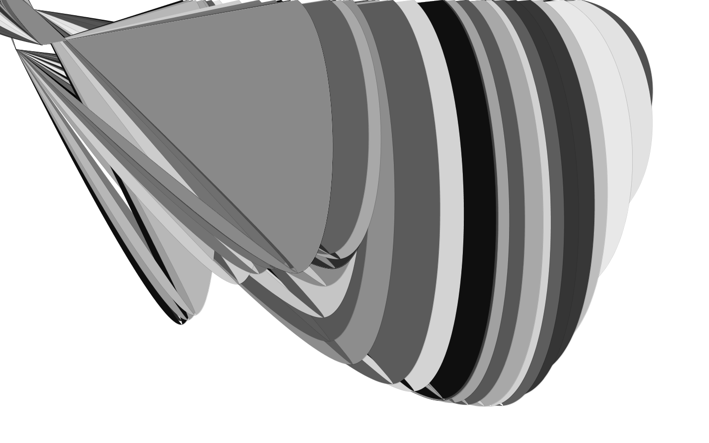
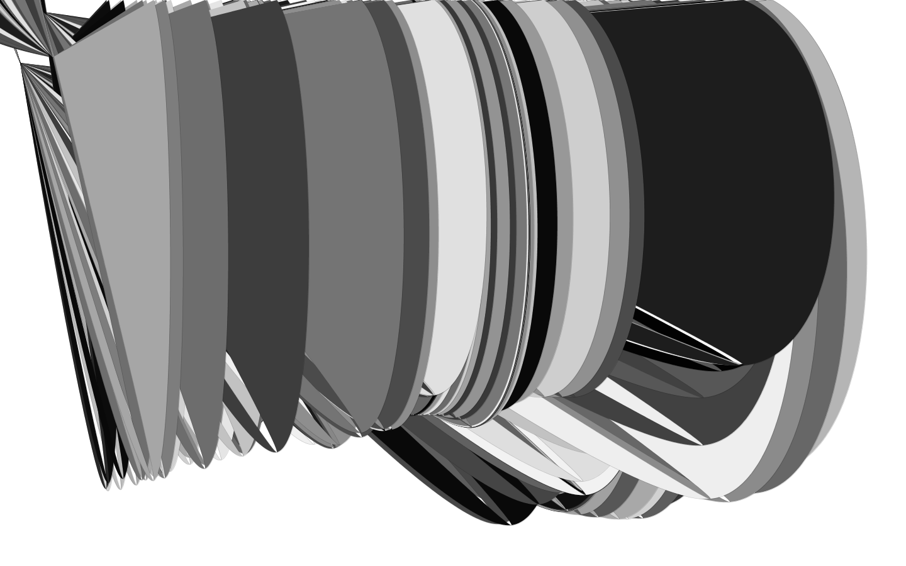
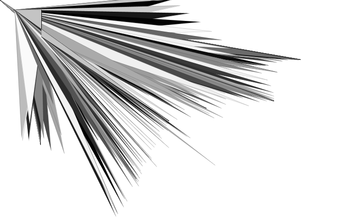
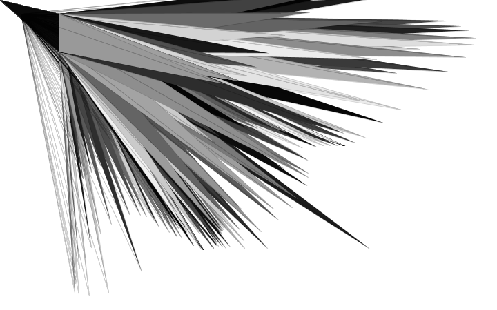
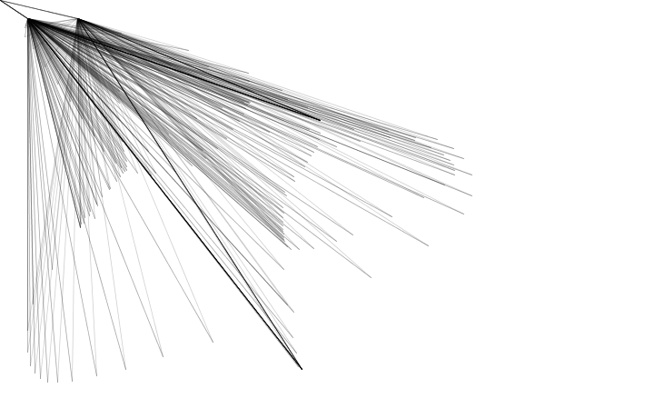
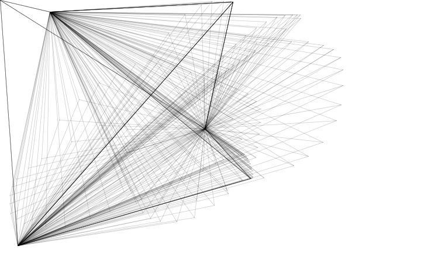
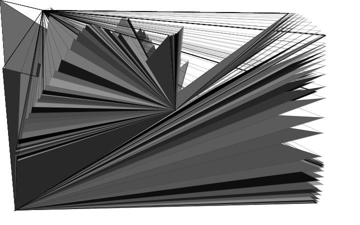
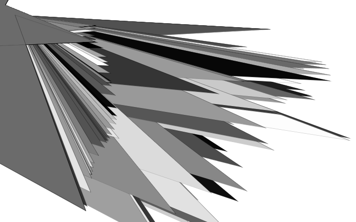

N O R M A L S : O U T from N O R M A L S on Vimeo.
N O R M A L S is a book series of design fictions, hyperlinked stories, and neo-brutalist graphic novels.
A limited edition box set is now available for pre-order at http://buy.normalfutu.re
More about N O R M A L S at http://normalfutu.re
Video + Music by N O R M A L S
With the help of Niels Adde
Delineating the Future – an interview with N O R M A L S
Class 01 :: Experimentation (Jan 27 2014)
<<<<<<< HEADClass 01 :: Experimentation 2 (Jan 29 2014)
Processing tests with just Curves and Vertexes








Buy Normals (Jan 29 2014)
N O R M A L S : O U T from N O R M A L S on Vimeo.
N O R M A L S is a book series of design fictions, hyperlinked stories, and neo-brutalist graphic novels.
A limited edition box set is now available for pre-order at http://buy.normalfutu.re
More about N O R M A L S at http://normalfutu.re
Video + Music by N O R M A L S
With the help of Niels Adde
Delineating the Future – an interview with N O R M A L S
Class 01 :: Experimentation (Jan 27 2014)
======= >>>>>>> aa51244c2ef8def8604670893257b9a257a18660Processing tests of Curves and Vertexes with Noise and Random